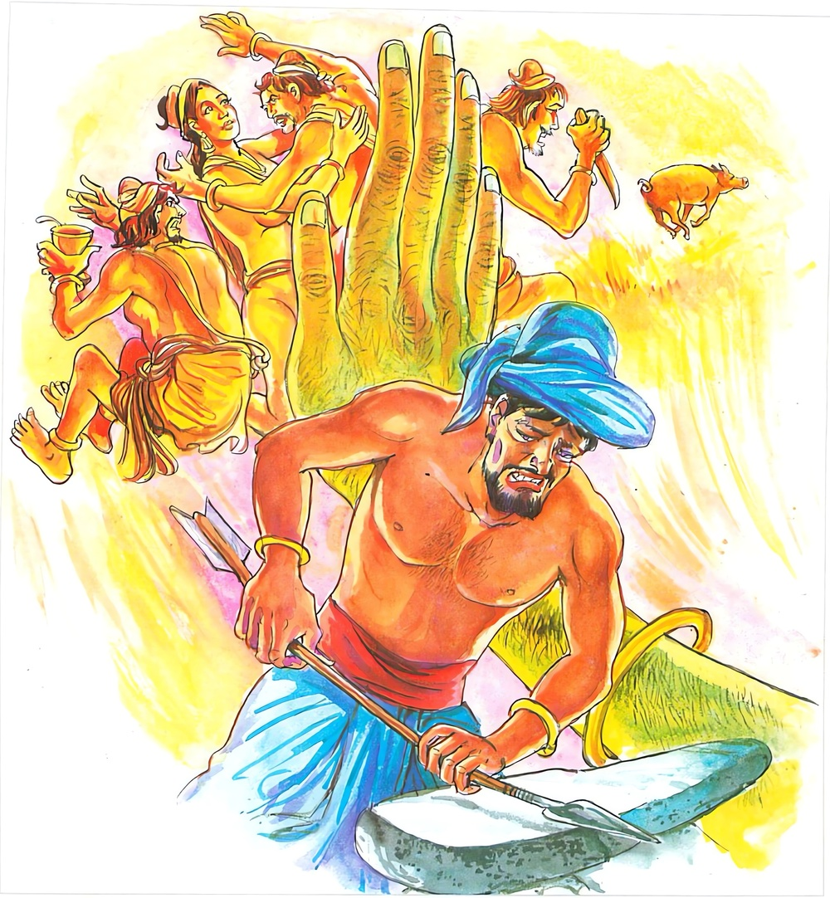

3-1 පළමුවන මේඝිය තෙරුන්ගේ වස්තුවයි
මෙම කතාව සද්ධර්ම සාගරයෙන් ද කියවන්න.
ඵන්දනං චපලං චිත්තං දුරක්ඛං දුන්නිවාරයං
උජුං කරොති මෙධාවී උසුකාරො’ව තෙජනං.
නොයෙක් අරමුණෙහි සැලෙන, (එක් අරමුණෙක නොපිහිටන හෙයින්) චපල වූ (අනවස්ථිත වූ), රක්නට දුෂ්කර වූ, (දුසිරිත් කෙරෙන් වළක්වන්නට දුෂ්කර වූ) සිත නුවණැත්තේ ඍජු කරන්නේ ය. හීවඩුවා හීදංඩක් ඇද මැඩ ඉදි කරන්නාක් මෙනි.

වාරිජො’ව ථලෙ ඛිත්තො ඔකමොකත උබ්භතො
පරිඵන්දතිදං චිත්තං මාරධෙය්යං පහාතවෙ.
උදක සංඛ්යාත වාසස්ථානයෙන් නගන ලද, ගොඩ බිම තබන ලද මසකු මේ (අභාවිත) සිත (නොයෙක් අරමුණෙහි පරිභ්රමණ වශයෙන්) සැලෙන්නේ ය. (එහෙයින් ම) මරධෙයය ( ක්ලේශවෘත්තය) පහ කටයුතු යි.
ඵන්දනං චපලං චිත්තං ආදි මේ ධර්මදේශනාව බුදුරජාණන්වහන්සේ වාලිකාපර්වතයෙහි වාසය කරන සමයෙහි ආයුෂ්මත් මෙඝියතෙරුන් අරභයා දෙසූසේක. ඒ භික්ෂුව පිළිබඳ පැහැදිලි කිරීම සඳහා සියලු මෙඝියසූත්රාන්තය විස්තර කළයුතුය. කාමාදි ත්රිවිධ විතර්කයන්හි මනසින් බැඳී ඒ අඹවනයෙහි ප්රධන් වීර්ය කිරීමට අපොහොසත්වී ආ මේඝියතෙරුන් අමතා භාග්යවතුන් වහන්සේ මෙසේ වදාළහ. මෙඝිය, ඔබ බරපතල වරදක් කෙළෙහිය. "මෙඝිය, මම එකලා වෙමි. අන් කිසි භික්ෂුවක් එන තෙක් ටිකක් ඉන්න" යැයි යදින්නා වූ මාව තනිකොට දමා යන්නා වූ භික්ෂුව සිතට වසඟ වූවකු වීමට නො වටියි. මේ සිත වූකලී ඉක්මන්ය. එය තම වසඟයෙහි පවත්වා ගතයුතුයයි වදාරා මේ ගාථාද වදාළහ.
සැලෙන චපල සිත
රැකුම වැළකුම දුස්කරයි
නුවණැත්තා එම සිතෙහි
ඇද හරියි රිජු කෙරෙිය
හී තනන වඩුවා මෙන්
ජලයෙන් ගොඩට ගත්
මාළුවකු දඟලන්නා සේ
අරමුණු සොයා දුවන හිත
නිසල කැරුමට රිසිනම්
මාරවසඟෙට නොගොස්
උපත නවතාලිය යුතු
එහි එන්දනං යනු රූපාදි අරමුණුවල ගැලී සෙලවීමයි. දැඟලීමයි. චපලං යනු එක් ඉරියව්වක නොසිටින ගම් දරුවකු මෙන් එක් අරමුණක නොසිටීමයි. දුව යෑමයි. චිත්තං යනු විඤ්ඤාණයයි. භූමිවස්තු අරමුණු ක්රියා ආදිය සිතන හෙයින් මෙයට සිත යයි කියනු ලැබෙයි. දුරක්ඛං යනු ගොයම් මඩින විට එම ගොයම්ම කන ගොනුන් මෙන් එක් සප්පාය අරමුණක නවතා ගත නොහැකි රැකිය නොහැකි වීමය. දුන්නිවාරයං යනු විරුද්ධ අරමුණකට යෑම වැළැක්වීමට නොහැකි දුකයි, නවතාගත නොහැකි නිසා ඇතිවන දුකයි. උසුකාරොව තෙජනං යනු යම් ආකාරයකින් හී වඩුවෝ එක් ලීකඩක් කැලෑවෙන් ගෙනවුත් පොතු ගලවා අඟුරු කබලක බහා තවා රුක්දෙබලක ලා තළා වක්නැති කොට ඇද ඇර දුනුවායකු විසින් විද සිදුරු කරන්ට තරම් සිනිඳු කරත්ද, එසේ කොට රාජරාජමහාමාත්යයන් ඉදිරියේ ශිල්ප දක්වා මහත්වූ සත්කාර සම්මාන ලබත්.
ඒ ආකාරයෙන් නුවණැති පණ්ඩිත විඥපුරුෂයා දඟලන සැලෙන ස්වභාවය ඇති සිත ධුතාංග නමැති ආරණ්යවාසයෙන් පොතු සුඹුළු ගලවා පහවූ ඕලාරික කෙලෙස් ඇත්තක් බවට පමුණුවා ශ්රද්ධා නමැති ජලයෙන් තෙමා කායික චෛතසික වීර්යයෙන් රත්කොට සමථවිපස්සනා නමැති දෙබලෙහි දමා තළා ඇද නැති වක්නොවූ සිනිඳු එකක් කෙරෙහිද, එසේ කොට සංස්කාරයන් මෙනෙහි කොට මහත්වූ අවිද්යා කඳ පලා දමා, ත්රිවිද්යා ෂට්අභිඥා නවලොව්තුරුදහම් යන මේ දහම් අත්පත් කරගෙන අග්රදක්ෂිණාර්හ බව ලබයි.
වාරිජොව යනු මසකු මෙන්. ථලො ඛිත්තො යනු අතින් හෝ පයින් හෝ දැල් ආදියකින් හෝ වෙනත් අයුරකින් ගොඩට දමනලද ඔකමොකත උබ්භතො යනු ඔක පුණ්ණෙහි චීවරෙහි යනාදි තැන්වල මෙන් උදකයෙහි ජලයෙිහ ඔකං පහාය අනිකෙතසාරී යන මෙහි ඔක යනු වාසස්ථානයයි, මෙහි ඔකමොකතො යනු උදක සංඛ්යාත වාසස්ථානයයි යන අර්ථයි, උබ්භතො යනු යම් සේ ඒ ජලස්ථානයෙන් උඩට ගන්නා ලද, ගොඩ තැබූ මත්ස්යයා ජලය නොලබන නිසා අතිශයින්ම දඟලයිද, එසේ මෙහිද පස්ක්ම සැප නමැති ස්ථානයේ ඇලී සිටින්නා එයින් උඩට ගෙන මාරයාට යටත්වූ සංසාර පැවැත්ම හැර දමන්ට විදර්ශනා කර්මස්ථානයෙහි යෙදූ සිත කායික චෛතසික වීර්යයෙන් තවනු ලබන්නේ අතිශයින්ම ගැහෙයි. දඟලයි. එක් ලෙසක නැවතී සිටින්ට අපොහොසත් වෙයි. මෙසේ වෙනත් ධුරනික්ෂේප (බලාපොරොත්තු හැර නොදමන) නොකර නුවණැති පුද්ගලයා ඒ කියූ ආකාරයෙන්ම සිත සෘජු වැඩට ගතහැක්කක් බවට පත්කර ගනී යන අර්ථයි.
වෙනත් ක්රමයකට අනුව මේ මාරයාට යටත් කෙලෙස් පැවැත්ම අත් නොහැර සිටි සිත ඒ මාළුවා මෙන් ගැහෙයි. ඒ නිසා මාරයාට යටත්වීමෙන් ම සෙලවෙයි. එය අත්හළ යුතුය යනු අර්ථයි.
ගාථා කෙළවර මෙඝියතෙරණුවෝ සෝවාන්ඵලයෙහි පිහිටියාහුය. අනික් බොහෝ අයත් සෝවාන් ආදී තත්ත්වයන්ට පැමිණියහ.